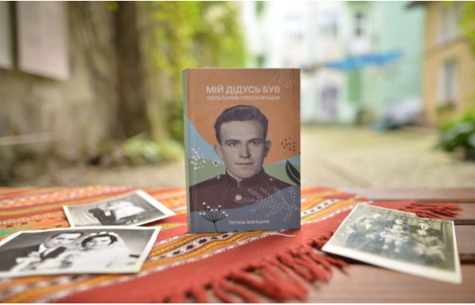
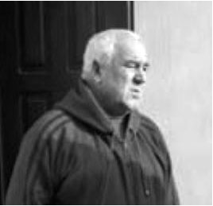

W zakładce Historia będzie można zapoznać się wkrótce z ciekawymi informacjami, będącymi uzupełnieniem historii Kopysna, m.in.:
- ile wynosiła w poł. XIX wieku wartość dóbr Kopysna,
- o ciekawym procesie o wypłatę należności tj. 3000 guldenów holenderskich od Wincentego Tyszkowskiego i licytacji jego dóbr,
- sprawozdanie z tworzenia w 1926 r. w Kopysnie Stronnictwa Chłopskiego,
- o kwitach Pawła Tyszkowskiego rozdawanych chłopom przed wyborami do parlamentu, kradzieży 6 łyżek z jego stołu i wiele, wiele innych.
Wkrótce omówienie procesu o oszustwo, jaki miał miejsce w Wiedniu za sprawą pewnego zdemoralizowanego hrabiego, który wciągnął w swoje ciemne interesy dwór cesarski ... Jak twierdził oszust urodził się on w Kopysnie :).
A tu link do mapy google z naniesionymi wszystkimi budynkami z roku 1852 r. - google.com/maps
Miłej lektury :)
Z przyjemnością informujemy o wydanej niedawno książce: "Мій дідусь був польським переселенцем” („Mój dziadek był polskim imigrantem”). Jej autorem jest Тетяна Іваніцька, wnuczka Michała Kopałeckiego, mieszkańca Kopysna, który po II wojnie światowej musiał opuścić swoje miejsce zamieszkania i osiedlić się z rodziną na terytorium ówczesnego Związku Radzieckiego. Książka porusza m.in. bolesny temat deportacji, której doświadczyło ok. 600 mieszkańców Kopysna.

Materiały udostępnione przez autora książki
Książkę można nabyć na stronie - book.ivanitska.biz.ua
Polecamy też wywiad radiowy z autorką książki - soundcloud.com
W zakładce Geografia można zapoznać się prawdopodobnym pochodzeniem i znaczeniem nazw poszczególnych części wsi, w tym Mochowisko, Dział, Prowały itd.
Niektóre z tych nazw nawiązują do hodowli owiec prowadzonej w XV w. przez Wołochów.
W zakładce Historia można zapoznać się z zaktualizowanymi informacjami na temat działań wojennych podczas I wojny światowej jakie miały w Kopysnie oraz w jego pobliżu. Poza tym uzupełniliśmy informacje na temat dworu, nie znajdował się on tam, gdzie do tej pory sądziliśmy :). Być może też odkryliśmy miejsce, gdzie w XV w. w Kopysnie były pasieki.
W zakładce Historia zamieściliśmy nowe informacje na temat Kopysna, które udało się nam odszukać w archiwach. Wśród nich jest m.in. historia o tym, jak Książę Leon Sapieha leczył swą żonę w Kopysnie ... serwatką z mleka owczego.
Pracujemy nad nową stroną Kopysna oraz mapą, dzięki której odwiedzając Kopysno, będzie można stanąć w miejscu, w którym był dom rodziców lub dziadków. Trudne zadanie i wiemy, że nie będzie możliwe to w każdym przypadku, ale obiecujemy, że zrobimy wszystko co w naszej mocy.
przykrością informujemy, iż 23 lipca 2020 r. zmarł Michał Jakubów. Zawsze podziwialiśmy Go za niespożyty ogrom energii i chęć życia, choć zmagał się w ostatnich latach z problemami zdrowotnymi. Kochał Kopysno. Często podkreślał, iż chciałby być pochowany w miejscu gdzie się urodził. Stanie się to według Jego życzenia. W dniu 1 sierpnia 2020 r. o godz. 12.30 w kościele w Rybotyczach przewidziana jest modlitwa różańcowa, a o godz. 13.00 msza, po czym uda się w miejsce, które bardzo cenił, do Kopysna.
Żegnamy dziś naszych bliskich, lecz nadejdzie czas, że będziemy ich wszystkich witać z niebywałą radością.

W telewizji Rzeszów, w programie "Poranek z TVP 3 Rzeszów" (zob. rzeszow.tvp.pl) mogliśmy zaprezentować stronę internetową Kopysna i opowiedzieć co nieco o mieszkańcach Kopysna i samej miejscowości. Dla wyjaśnienia, strona ta od początku nie miała charakteru komercyjnego i nadal jest utrzymywana z naszych środków. Cieszy nas to, że swoją pracą sprawiamy komukolwiek radość.
"Dear Dariusz and Janusz !!! Thank you so much for your wonderful work !!! I really appreciate what you do! It is very important for all of us to remember the history of such a beautiful place."
To treść listu, który otrzymaliśmy niedawno z USA. Bardzo dziękujemy wszystkim za uznanie dla naszej pracy, a zwłaszcza za wszelką pomoc przy tworzeniu strony Kopysna. Strona Kopysna istnieje już 17 lat. Gdybyśmy na początku wiedzieli ile pracy nas czeka, nie wiemy czy podjęlibyśmy się tego zadania :). Mamy w planie zmianę szaty graficznej strony oraz dostosowanie jej do nowych wymagań, jakie narzuca nam postęp technologiczny. Prace trwają. Prosimy o uwagi i sugestie w tej sprawie. Pozdrawiamy Wszystkich, którzy odwiedzają stronę Kopysna i oczekujemy, że nadal będziecie z nami współpracować.